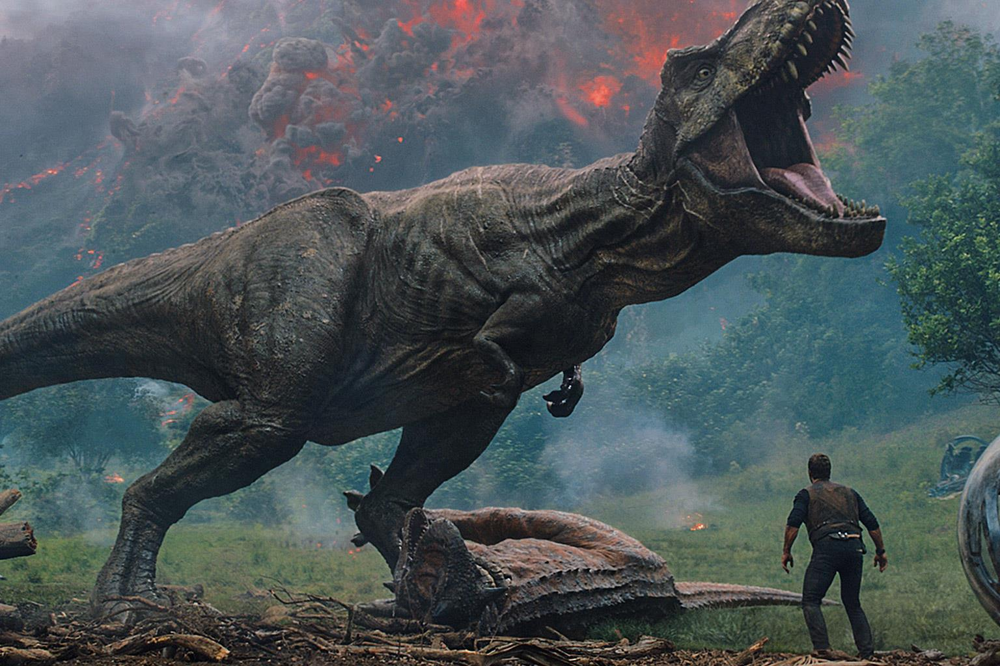
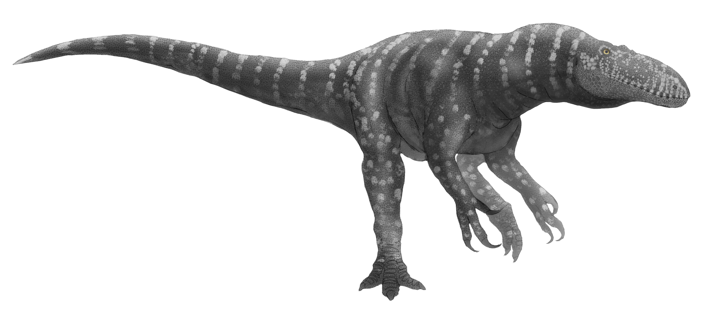
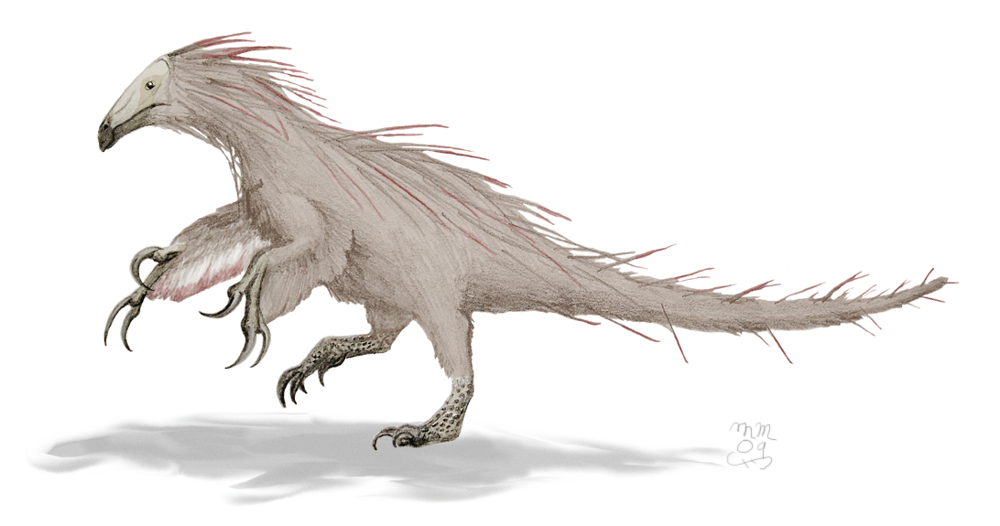

Dinoszauruszok
Tyrannosaurus

Más tyrannosauridákhoz hasonlóan a Tyrannosaurus is két lábon járó húsevő volt, masszív koponyával, melyet hosszú, nehéz farka tartott egyensúlyban. Hátsó lábai aránylag nagyok és izmosak, a mellsők kicsik, de méretükhöz képest szokatlanul erősek voltak, a két ujj mellett lehetséges, hogy egy elcsökevényesedett harmadikkal is rendelkeztek. Bár más theropodák megközelítik vagy esetleg túl is szárnyalják a Tyrannosaurus méreteit, a tyrannosauridák között ez a legnagyobb ismert nem, és emellett az egyik legnagyobb valaha élt szárazföldi húsevő.Bővebben
Afrovenator

Egyetlen faját nevezték el, az A. abakensist. A neve ragadozó természetére és afrikai lelőhelyére, egy nigeri területre utal, melynek tuareg neve In Abaka. A nem és a faj eredeti leírása 1994-ben, a Science című neves tudományos folyóiratban jelent meg, Paul Sereno, Jeffrey Wilson, Hans Larsson, Didier Dutheil és Hans-Dieter Sues munkája révén. Bővebben
Beipiaosaurus

A therizinosauroideák pontos osztályozása komoly viták tárgya volt, mivel prosauropodaszerű fogazattal és olyan testfelépítéssel rendelkeztek, ami azt jelzi, hogy a szokványos theropodáktól eltérően általában növényevők voltak.
Bővebben
Az összes dinoszaurusz felsorolva